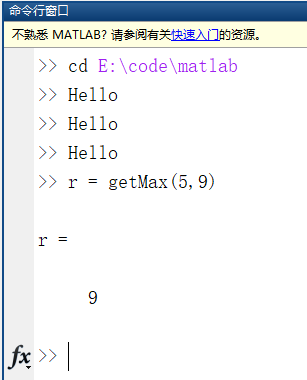

matlab基础¶
Matlab 安装¶
请使用学校提供的正版matlab安装教程进行matlab软件的安装和激活
Matlab使用¶
本章节我将以录音文件读取和展示为例为带大家进行简单的matlab操作。安装完成后，打开matlab界面，通过cd命令进入到工作目录。

由于在命令行中输入命令每次修改都需要重新复制粘贴，为了方便修改和运行代码，我们可以创建”.m”脚本文件来进行代码的实现。点击应用左上方的新建按钮，选择脚本：

然后编辑器中会出现一个Untitled.m 点击左上方的保存按钮，为这个脚本文件取名并保存在当前工作文件夹中，我将其命名为了“Hello.m”：

为了方便处理录音文件，我们将在手机上录到的“.wav”文件拷贝到当前的matlab工作目录下。 在”Hello.m”中编写文件读取和展示的代码：
%从录音文件receive.wav中读取数据和采样频率
[data, fs] = audioread('receive.wav');
%把数据展示到figure中
figure;
plot(data);

Matlab绘制出了图形：

横轴是采样点的序号，纵轴是采样点的值，代表声音的幅度。对局部放大之后如下图：

我们观察可以发现图中画出的是两条数据，这是因为录音文件中存储的是手机的两个麦克风所录到的两路信号，在工作区中观察变量data会发现其为n*2的矩阵：

双击其变量名可以在变量工作区中打开它，滚动屏幕就可以观察它的值：

Matlab除了可以建脚本文件，还可以创建函数文件。点击新建->函数：

编辑器中出现一个未命名的m文件，并且带有初始的函数结构。点击保存按钮保存这个文件并为函数取名，保存之后还需要对函数名和文件名进行统一：

修改函数命名之后编辑器右侧的小方块将变成绿色，表示问题已修复。

接下来可以根据自己想要的功能修改函数的输入输出参数以及计算过程： ~Matlab function [result] = getMax(a,b) %getMax 此处显示有关此函数的摘要 % 输入参数是两个数a和b，返回这两个数中的最大值。 result= max(a,b); end ~ 现在就可以在命令行、脚本或其他函数文件中利用函数名称调用它了：

有了这些基础，你已经可以进行简单的matlab使用了，更多的操作你可以自行进行学习，我们后续的教程也会在首次使用到某个新操作的时候进行相应的介绍。